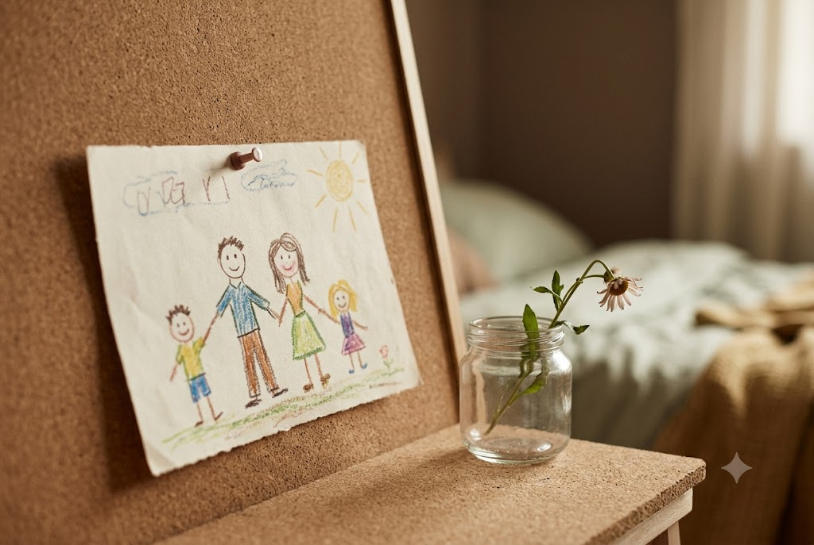

Understanding the Waves of Grief
Grief rarely follows a straight line. Discover how to navigate the unexpected waves with self-compassion and patience.
Read ArticleGentle readings and practical guidance to help you navigate loss.
Grief rarely follows a straight line. Discover how to navigate the unexpected waves with self-compassion and patience.
Read ArticleCreating small, meaningful rituals can provide comfort and a dedicated space to honor your loved one's memory.
Read Article
Guiding young minds through the concept of death requires honesty, gentle reassurance, and age-appropriate language.
Read ArticleWhen you lose a partner, you also lose a shared future. Exploring ways to gently find your footing as an individual again.
Read ArticleWhy the concept of moving on is flawed, and how we can focus on moving forward while carrying our love with us.
Read ArticlePractical, gentle strategies for maintaining basic self-care and nourishment when the weight of grief feels too heavy.
Read ArticleReach out when you are ready. All communications are completely confidential and handled with the utmost care.